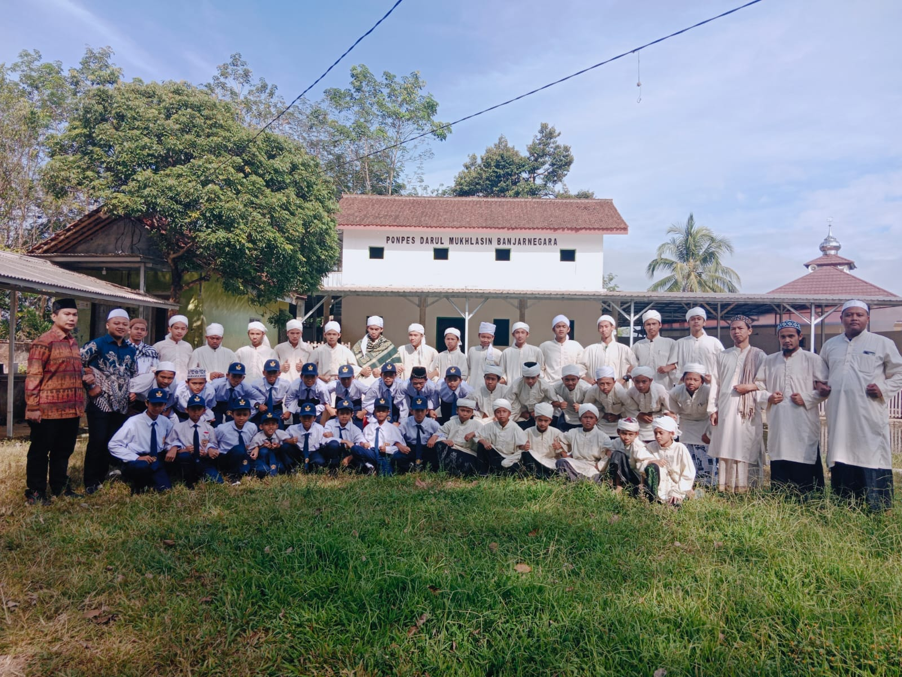

Motivasi Kami Membuat Pondok Pesantren Darul Mukhlasin Di Banjarnegara
Di era globalisasi saat ini pendidikan karakter merupakan hal yang sangat penting di karenakan dengan pendidikan inilah keberlangsungan kehidupan menjadi lebih baik karena banyak sekali anak-anak yang sekarang kehidupannya menjadi tidak terarah karena sejak kecil tidak di perhatikan tentang pendidikan karakter ini oleh karena itu terutama di kawasan banjarnegara, Oleh karena itu dengan didirikannya pondok pesantren darul mukhlasin ini diharapkan menjadi wadah atau tempat anak melatih karakternya menjadi lebih baik sejak dini.
Leave a comment